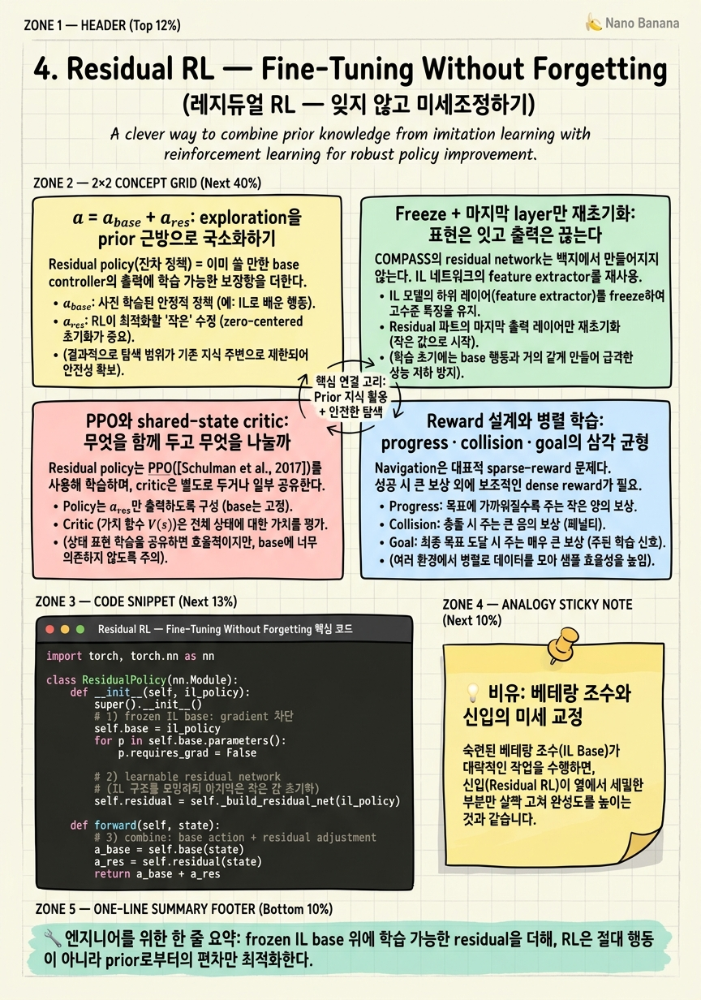

Residual RL — Fine-Tuning Without Forgetting

🎯 학습 목표
- residual RL의 a = a_base + a_res 정식화와 학습 안정성의 관계를 설명할 수 있다
- 왜 base policy를 freeze하고 마지막 layer만 재초기화하는지 안다
- PPO critic이 policy state를 공유할 때의 trade-off를 이해한다
- COMPASS의 reward 구성(progress·collision·goal)을 설계할 수 있다
- RL-from-scratch가 1000 episode에도 수렴 못 하는 이유를 IL prior로 설명한다
앞 챕터에서 우리는 IL이 강한 mobility prior를 주지만 covariate shift와 teacher 상한이라는 벽에 부딪히고, 이를 넘으려면 라벨이 아니라 reward 기반 개선이 필요하다는 결론에 도달했다. 이 챕터는 그 개선을 어떻게 '기존 능력을 잊지 않고' 수행하는가를 다룬다. COMPASS(arXiv:2502.16372)의 두 번째 단계, residual RL이다.
핵심 아이디어는 놀랄 만큼 단순하다. IL policy가 내놓는 base action을 그대로 두고, 그 위에 작은 교정항(residual)을 RL로 학습해 더하는 것 — \(a_t = a^{base}_t + a^{res}_t\). base는 얼려 두고 residual만 PPO로 훈련한다. 이 덧셈 구조가 왜 sparse-reward navigation에서 from-scratch RL을 5x~40x 성공률로 압도하는지, 그리고 왜 학습이 안정적인지가 이 챕터의 중심 질문이다.
우리는 residual 정식화를 exploration과 optimization 관점에서 해부하고, base를 freeze하고 마지막 output layer만 재초기화하는 미묘한 설계 결정을 뜯어본다. 이어 COMPASS의 3-항 reward(progress·collision·goal)를 설계 관점에서 재구성하고, critic이 policy state를 공유할 때의 trade-off, Isaac Lab 위 병렬 학습 세팅, 그리고 curriculum·depth-critic ablation의 반직관적 결과까지 짚는다. 마지막으로 residual RL의 계보(Johannink 2019, Ankile 2024)를 통해 이 기법이 COMPASS만의 트릭이 아니라 IL→RL 전환의 일반 원리임을 확인한다.
핵심 내용
a = a_base + a_res: exploration을 prior 근방으로 국소화하기
Residual policy(잔차 정책) = 이미 쓸 만한 base controller의 출력에 학습 가능한 보정항을 더해 최종 행동을 만드는 정책. COMPASS에서 base action은 frozen IL policy \(a^{base}_t=\pi^{base}_\theta(p_t)\)이고, residual policy \(\pi^{res}_\phi\)가 \(a^{res}_t\)를 내며, 최종 행동은 다음과 같다.
\[a_t = \pi^{base}_\theta(p_t) + \pi^{res}_\phi(p_t), \qquad \pi^{base}\text{ frozen}\]
이 구조의 위력은 exploration을 재정의하는 데 있다. from-scratch RL의 초기 policy는 사실상 무작위라, 행동 공간 전체를 헤매며 목표에 우연히 닿기를 기다린다. 반면 residual RL은 IL prior가 이미 대략 옳은 방향으로 로봇을 몰고 있고, RL은 그 궤적 근방의 작은 교정만 탐색한다. 즉 탐색 분포가 \(a^{base}\)를 중심으로 좁게 형성되어, 유의미한 궤적(목표에 가까워지는 궤적)을 훨씬 자주 만난다.
학습 안정성도 여기서 나온다. residual head를 0에 가깝게 초기화하면 학습 시작 시점의 policy는 사실상 IL policy 그 자체다. 즉 이미 '잘 작동하는 정책'에서 출발해 조금씩 벗어나며 개선하므로, RL 특유의 초기 붕괴(무작위 policy가 catastrophic한 행동을 반복하는 구간)가 없다. 이것이 '잊지 않고 미세조정한다(fine-tuning without forgetting)'의 정확한 의미다 — base의 능력은 구조적으로 보존되고, residual은 오직 그 위의 delta만 담당한다.
정식화 관점에서 residual RL은 행동 공간의 재파라미터화다. 최적화 대상이 '절대 행동 \(a\)'가 아니라 'prior로부터의 편차 \(a^{res}\)'로 바뀌면서, 좋은 해가 원점(\(a^{res}=0\)) 근처에 있다는 강한 사전 정보가 optimization landscape에 주입된다. sparse reward에서 이 사전 정보가 곧 sample efficiency의 원천이다.
Freeze + 마지막 layer만 재초기화: 표현은 잇고 출력은 끊는다
COMPASS의 residual network는 백지에서 만들어지지 않는다. IL과 같은 world model을 공유하고, IL의 action policy 가중치를 그대로 복사한 뒤 마지막 output layer만 재초기화(reinit)한다. 이 세 가지 결정에는 각각 이유가 있다.
같은 world model을 쓰는 이유는 표현을 다시 배우지 않기 위해서다. latent state \(s_t\)는 이미 mobility에 유용한 정보를 압축하고 있으므로, residual policy가 픽셀부터 다시 학습할 이유가 없다. IL 가중치를 복사하는 이유는 residual head의 하위 feature 추출부가 이미 mobility-relevant한 표현으로 초기화되어, 무작위 초기화보다 훨씬 좋은 출발점을 주기 때문이다.
그런데 왜 하필 마지막 layer만 재초기화하는가? 만약 마지막 layer까지 복사하면 residual policy의 초기 출력이 base와 동일해져 \(a^{res}\)가 base action을 그대로 복제하는 값으로 시작한다 — 이는 \(a=2a^{base}\)를 의미해 궤적을 망가뜨린다. 반대로 전체를 재초기화하면 앞서 말한 좋은 feature 초기화를 잃는다. 마지막 layer만 reinit하면 하위 표현은 물려받되 출력은 0 근방의 작은 residual로 시작하는, 정확히 원하는 상태가 된다.
여기서 미묘하지만 중요한 점은 IL policy가 끝까지 frozen으로 유지된다는 것이다. residual head가 아무리 학습되어도 base branch의 가중치는 gradient를 받지 않는다. 이 덕분에 base의 mobility prior는 학습 내내 훼손되지 않고, residual은 순수하게 embodiment별·환경별 교정만 담당한다. 만약 base까지 함께 학습하면 sparse reward의 노이즈가 애써 얻은 prior를 지워버릴 위험이 있다 — catastrophic forgetting을 구조적으로 차단하는 것이 freeze의 목적이다.
PPO와 shared-state critic: 무엇을 함께 두고 무엇을 나눌까
residual policy는 PPO(Schulman et al. 2017)로 학습된다. PPO는 clipped surrogate objective로 policy 업데이트 크기를 제한해 on-policy 학습을 안정화하는 알고리즘으로, residual처럼 '작은 교정'을 점진적으로 쌓는 세팅에 잘 맞는다. 매 업데이트가 현재 policy에서 너무 멀리 벗어나지 않으므로, 어렵게 얻은 prior 근방의 좋은 궤적을 급격히 이탈할 위험이 작다.
critic 설계가 흥미롭다. COMPASS의 critic은 policy state \(p_t\)를 입력받는 표준 MLP다. 즉 actor(residual)와 critic이 같은 fused representation을 공유한다. 이 공유의 장점은 명확하다 — 이미 mobility-relevant하게 정제된 표현 위에서 value를 추정하므로 critic이 표현을 처음부터 학습할 필요가 없고, sample efficiency가 좋아진다.
trade-off도 있다. actor와 critic이 표현을 공유하면 두 목표(policy gradient와 value regression)의 gradient가 같은 표현에 섞여 들어가 서로 간섭할 수 있다. 게다가 policy state \(p_t\)는 world model과 fusion을 거친 압축 표현이라, value 추정에 필요하지만 policy state에는 빠져 있는 정보(예: 특정 장애물 기하)가 있으면 critic이 그것을 볼 수 없다. 이 한계가 아래 depth-critic ablation의 동기가 된다.
실제로 COMPASS는 critic에 추가 정보를 주는 실험을 한다. depth-critic(ResNet18로 depth image를 인코딩해 critic 입력에 추가)은 office처럼 키 큰 장애물이 많은 환경에서는 도움이 되지만, warehouse처럼 낮은 장애물 환경에서는 오히려 손해였다. 교훈은 critic augmentation이 만능이 아니라 환경의 관측 병목에 의존한다는 것 — depth가 policy state에 이미 충분히 반영된 환경에서는 중복 신호가 노이즈로 작용한다.
Reward 설계와 병렬 학습: progress · collision · goal의 삼각 균형
navigation은 대표적 sparse-reward 문제다. 목표 도달이라는 최종 사건만으로 보상을 주면 학습 초기에 신호가 거의 없다. COMPASS는 이를 3-항 reward로 shaping한다.
-
Progress = 목표까지 거리가 줄어든 만큼 비례해 주는 양의 보상. 매 스텝 dense 신호를 제공해 '올바른 방향으로 가고 있다'를 알려준다.
-
Collision avoidance = 충돌·넘어짐에 대한 penalty. 목표만 좇다 벽에 박는 행동을 억제한다.
-
Goal completion = 목표 도달 시의 큰 양의 보상. 최종 성공을 명시적으로 강화한다.
이 세 항의 균형이 정책의 성격을 결정한다. progress 가중치가 너무 크면 장애물을 무시하고 직진하는 저돌적 정책이, collision penalty가 너무 크면 움직이길 두려워하는 소극적 정책이 나온다. 특히 progress가 매 스텝 dense하게 들어오기 때문에, residual RL은 첫 성공 이전에도 '거리를 줄이는 법'을 배울 수 있다 — 이것이 순수 sparse goal-only reward보다 학습을 크게 가속한다.
학습 인프라는 대규모 병렬화다. Isaac Lab에서 64개 환경을 병렬로 굴리고 2x L40 GPU를 사용하며, specialist 하나당 약 1000 episode를 학습한다(단 Carter 로봇은 X-Mobility가 이미 Carter로 사전학습되어 overfit을 피하려 300 episode만). 목표 거리는 2~5m uniform, 에피소드는 최대 256 timestep, 직선 경로가 simplified route로 주어진다. 결정적 디테일 하나 — 환경 reset(도달·충돌·timeout) 시 world model의 history state까지 clear한다. 그렇지 않으면 이전 에피소드의 latent 기억이 새 에피소드로 새어 들어가 credit assignment를 오염시킨다.
ablation은 반직관적 교훈을 준다. goal-distance curriculum(쉬운 가까운 목표부터 점진적으로)은 도움이 되지 않았다 — IL prior가 이미 강한 초기화를 주므로, curriculum이 어려운 시나리오 노출을 줄여 오히려 손해였다. from-scratch RL이라면 curriculum이 필수였겠지만, 좋은 prior가 있으면 처음부터 어려운 분포에 노출시키는 편이 낫다는 것이다. 이는 'prior의 존재가 학습 레시피 전체를 바꾼다'는 이 챕터의 큰 그림을 압축한다.
왜 5x~40x인가: IL prior가 뚫는 sample-efficiency 병목
이제 정량 결과를 논리로 꿰맞출 차례다. residual RL specialist는 X-Mobility(IL base) 대비 성공률(SR) 5x~40x, WTT(weighted travel time류 지표) 3x 개선을 보인다. 더 결정적인 대조군은 RL-from-scratch — 같은 latent를 쓰되 IL base action 없이 처음부터 RL만 한 경우로, 1000 episode에도 수렴하지 못했다.
이 대비가 이 챕터 전체의 핵심 증거다. 두 경우의 차이는 오직 하나 — base action의 유무다. 같은 표현, 같은 reward, 같은 PPO인데 IL base가 있으면 수렴하고 없으면 실패한다. 왜인가? sparse-reward navigation에서 무작위 policy가 2~5m 떨어진 목표에 우연히 도달할 확률은 극히 낮고, 도달하지 못하면 goal reward 신호가 아예 발생하지 않는다. progress reward가 있어도, 무작위 policy는 장애물에 막히거나 제자리를 맴돌아 유의미한 progress 궤적조차 드물게 만든다.
residual RL은 이 병목을 정확히 우회한다. IL base가 로봇을 대략 목표 방향으로 몰아주므로, 학습 첫 스텝부터 progress reward가 꾸준히 발생하고 goal 도달도 종종 일어난다. 즉 IL prior는 '탐색을 유의미한 궤적에 집중'시켜 sparse reward를 사실상 dense reward처럼 만든다. RL의 근본 병목이 exploration이라면, IL은 바로 그 exploration 문제를 해결해 주는 부품이다.
이것이 residual RL의 계보와 연결된다. Johannink et al.(2019 ICRA)은 residual RL을 로봇 제어에 도입했고, Ankile et al.(2024)은 imitation에서 refinement로 넘어가는 정밀 조립에 residual RL을 적용했다. COMPASS는 이 일반 원리를 cross-embodiment navigation에 옮긴 것이다. 결론 — residual RL은 트릭이 아니라 'IL이 준 prior를 RL이 결과 신호로 다듬는' IL→RL 전환의 표준 문법이며, 다음 챕터에서 각 embodiment specialist들을 하나의 policy로 합치는 distillation의 재료가 된다.
💡 비유로 이해하기
residual RL은 이미 실력 있는 베테랑 운전자를 운전석에 앉혀 두고, 신입이 그 옆에서 핸들에 손을 살짝 얹어 미세하게 각도만 보정하는 것과 같다. 베테랑(IL base)은 대체로 옳은 방향으로 차를 몰고, 신입(residual)은 '이 코너에선 조금 더 안쪽으로'처럼 작은 delta만 더한다. 차가 절대 크게 흔들리지 않는 이유는, 베이스가 항상 안정적으로 유지되기 때문이다.
만약 신입 혼자 백지에서 운전을 배운다면(from-scratch RL), 도로에 나서자마자 무작위로 핸들을 꺾다가 목적지 근처엔 가보지도 못하고 사고를 반복한다 — '목적지에 도착하면 칭찬'이라는 보상은 도착 자체를 못 하니 영영 주어지지 않는다. 베테랑이 대략 목적지 방향으로 몰아주기에, 비로소 신입은 '방금 그 보정이 도착을 앞당겼다'는 피드백을 받아 배울 수 있다.
베테랑을 '얼려 둔다(freeze)'는 것은, 신입이 실수해도 베테랑의 운전 습관 자체는 절대 나빠지지 않게 한다는 뜻이다. 신입의 서툰 시도가 베테랑의 실력을 갉아먹지 않으므로, 최악의 경우에도 성능은 베테랑 수준 아래로 떨어지지 않는다. 그리고 신입의 손에서 힘을 빼 시작하면(마지막 layer만 0 근처로 reinit), 처음엔 베테랑 그대로 달리다가 점점 자기만의 교정을 얹어 간다.
💻 코드 예시
ResidualPolicy를 nn.Module로 스케치한다. frozen IL base + trainable residual, 마지막 layer만 reinit, 그리고 PPO update 한 스텝. 핵심은 base가 gradient를 받지 않으면서 최종 행동이 두 branch의 합이 되는 구조다.
import torch, torch.nn as nn
class ResidualPolicy(nn.Module):
def __init__(self, il_policy):
super().__init__()
# 1) frozen IL base: gradient 차단
self.base = il_policy
for p in self.base.parameters():
p.requires_grad_(False)
# 2) residual: IL action head 가중치를 복사...
self.res = copy.deepcopy(il_policy.actor)
for p in self.res.parameters():
p.requires_grad_(True)
# 3) ...단 마지막 layer만 reinit -> 초기 a_res ~ 0
nn.init.zeros_(self.res.out.weight)
nn.init.zeros_(self.res.out.bias)
def forward(self, p_t):
with torch.no_grad():
a_base = self.base.actor(p_t) # frozen, no grad
a_res = self.res(p_t) # trainable delta
return a_base + a_res # a = a_base + a_res
def ppo_step(policy, critic, batch, opt, clip=0.2):
p_t = batch['policy_state'] # world model + route fusion
a = policy(p_t)
logp = policy.res_dist(p_t).log_prob(batch['action']).sum(-1)
ratio = torch.exp(logp - batch['logp_old'])
adv = batch['advantage']
# clipped surrogate: prior 근방에서 급격한 이탈 방지
l_clip = -torch.min(ratio * adv,
torch.clamp(ratio, 1-clip, 1+clip) * adv).mean()
v = critic(p_t) # shared policy_state 위 MLP critic
l_v = (v - batch['return']).pow(2).mean()
loss = l_clip + 0.5 * l_v
opt.zero_grad(); loss.backward(); opt.step()
return loss.item()frozen base — 생성자에서 self.base의 모든 파라미터에 requires_grad_(False)를 걸고, forward에서 a_base 계산을 no_grad로 감싼다. 이 두 겹의 차단으로 base branch는 학습 내내 gradient를 받지 않아 mobility prior가 훼손되지 않는다 — catastrophic forgetting의 구조적 방지다.
copy then reinit last layer — residual은 IL actor를 deepcopy해 하위 표현을 물려받되, 마지막 out layer의 weight·bias를 0으로 재초기화한다. 그 결과 학습 시작 시 \(a_{res}\approx0\)이므로 최종 행동은 사실상 IL policy와 같다. 만약 마지막 layer까지 복사했다면 초기 출력이 base를 복제해 \(a=2a^{base}\)가 되어 궤적이 망가진다 — reinit이 바로 이 문제를 막는다.
forward = a_base + a_res — 두 branch의 합이 곧 재파라미터화의 핵심이다. RL은 절대 행동이 아니라 prior로부터의 편차 \(a_{res}\)만 최적화하므로, 좋은 해가 원점 근처에 있다는 강한 사전 정보가 optimization에 주입된다.
ppo_step — clipped surrogate objective가 policy 업데이트를 현재에서 \([1-\text{clip}, 1+\text{clip}]\) 비율 안으로 묶어, 어렵게 찾은 prior 근방의 궤적에서 급격히 이탈하는 것을 막는다. critic은 actor와 같은 policy_state를 입력받는 MLP로, 표현을 공유해 sample efficiency를 얻지만 value에 필요한 정보가 policy state에 빠져 있으면 볼 수 없다는 trade-off를 안는다 — 이것이 depth-critic ablation의 동기다.
🏭 현업에서의 평가
✅ 시니어가 보는 것
- a = a_base + a_res를 행동 공간 재파라미터화로 이해하고, 그것이 exploration을 prior 근방으로 국소화함을 설명하는가
- base를 freeze하고 마지막 layer만 reinit하는 이유(표현 계승 + 초기 a_res~0 + forgetting 방지)를 정확히 구분하는가
- sparse-reward에서 RL-from-scratch가 실패하고 residual이 수렴하는 차이를 exploration 병목으로 설명하는가
- reward shaping의 progress·collision·goal 균형과 그 가중치가 정책 성격에 미치는 영향을 논하는가
- shared-state critic의 sample efficiency 이득과 정보 병목 trade-off(depth-critic ablation)를 아는가
⚠️ 레드 플래그
- residual을 그냥 'RL fine-tuning'으로 뭉뚱그리고 덧셈 구조가 exploration을 바꾸는 원리를 설명 못 함
- base를 freeze하는 이유를 catastrophic forgetting 방지와 연결하지 못하거나, 전체 재학습이 왜 나쁜지 모름
- sparse reward를 dense progress로 shaping하는 이유와 curriculum이 prior 존재 시 오히려 손해인 점을 모름
- critic에 정보를 더 주면 항상 좋다고 단정(depth-critic이 환경 의존적임을 모름)
- world model history state를 reset 시 clear해야 하는 이유(credit assignment 오염)를 놓침
🎤 예상 인터뷰 질문
- 같은 latent·reward·PPO를 쓰는데 IL base action 유무만으로 하나는 수렴하고 하나는 1000 episode에도 실패한다. 이 차이를 sparse-reward exploration 관점에서 설명하라.
- residual policy를 만들 때 base 전체를 재초기화하는 것, 전혀 재초기화하지 않는 것, 마지막 layer만 재초기화하는 것의 초기 행동을 각각 비교하고 왜 세 번째가 옳은지 논하라.
- actor와 critic이 같은 policy state를 공유하는 설계의 장단점을 설명하고, depth-critic이 office엔 도움 되고 warehouse엔 해로운 이유를 관측 병목으로 해석하라.
✨ 핵심 요약
a = a_base + a_res
frozen IL base 위에 학습 가능한 residual을 더해, RL은 절대 행동이 아니라 prior로부터의 편차만 최적화한다.
Exploration 국소화
덧셈 구조가 탐색을 base 궤적 근방으로 좁혀 sparse reward를 사실상 dense reward처럼 만든다.
Freeze로 forgetting 차단
base를 얼려 두면 residual이 아무리 학습돼도 mobility prior가 훼손되지 않아 성능이 base 아래로 떨어지지 않는다.
마지막 layer만 reinit
하위 표현은 IL에서 계승하되 출력만 0 근방으로 시작해, 초기 정책이 IL 그대로에서 부드럽게 개선된다.
PPO + shared-state critic
clipped surrogate로 prior 근방 이탈을 막고, policy state를 공유한 MLP critic으로 sample efficiency를 얻지만 정보 병목을 감수한다.
3-항 reward 균형
progress(dense)·collision(penalty)·goal(sparse)의 가중치 균형이 저돌적·소극적 정책 사이에서 성격을 결정한다.
RL-from-scratch는 수렴 실패
IL base 없이는 무작위 policy가 목표에 닿지 못해 보상이 발생하지 않아 1000 episode에도 수렴하지 못한다.
Prior가 레시피를 바꾼다
강한 IL prior 덕에 goal-distance curriculum이 오히려 손해가 되는 등, prior의 존재가 학습 레시피 전체를 재정의한다.